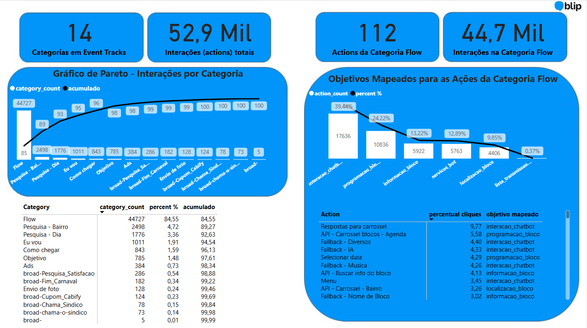
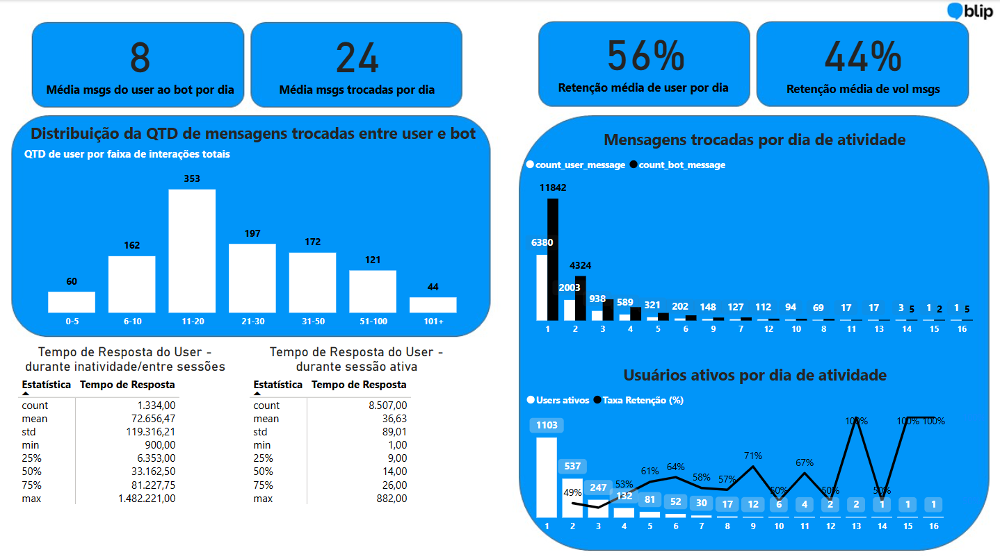
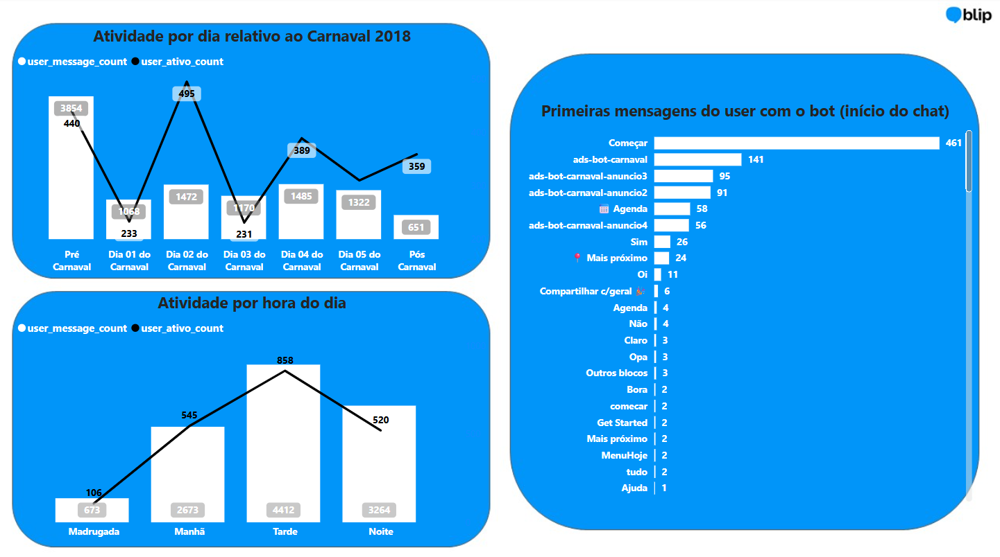
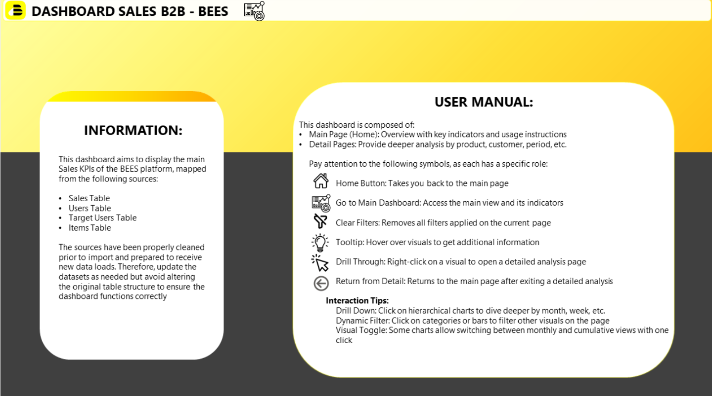
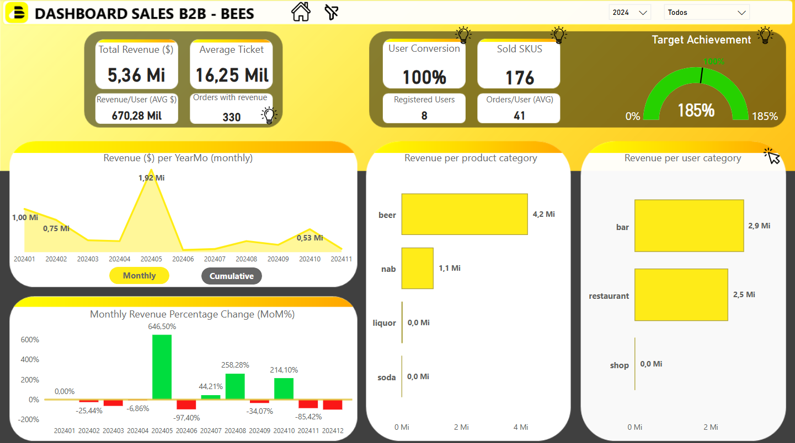
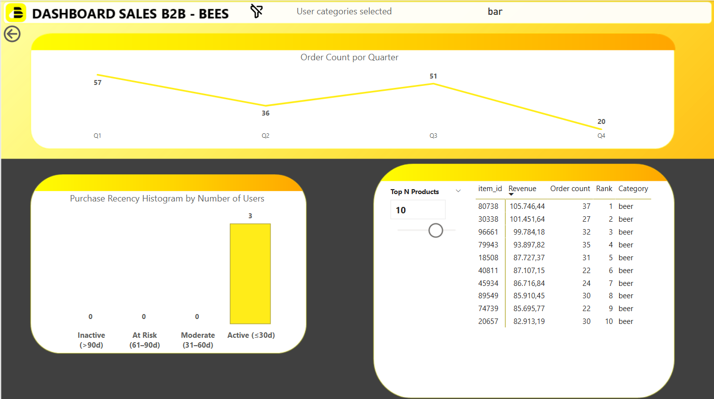

Sou um profissional apaixonado por dados, com experiência em consultoria, finanças e tecnologia. Atuo na área de dados ponta a ponta: da extração e modelagem até a análise e apresentação de insights para o negócio. Tenho domínio de ferramentas como Python, SQL, Power BI e experiência prática com Machine Learning, storytelling com dados e projetos analíticos em diferentes setores.
Desenvolvimento de uma análise ad-hoc a respeito de fraudes na utilização de contas de entregador no app ifood.
Ferramentas: SQL, Databricks.
Apresentação dos resultados:
Desenvolvimento de uma análise ad-hoc do chatbot "Carnafolia BH", com foco na manipulação de dados com Python e utilização do PBi somente para ilustrar os resultados.
Ferramentas: Python, Jupyter Notebook, PowerBi.
Conclusões a partir da análise dos dados gerados:
Gráficos desenvolvidos no PowerBi:
  
Projeto de desenvolvimento de um dashboard com dados de varejo para uma plataforma de vendas online "BEES".
Ferramentas: PowerBi.
Abaixo, alguns prints para ilustrar as principais telas desenvolvidas no dashboard:
  